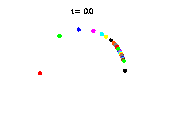
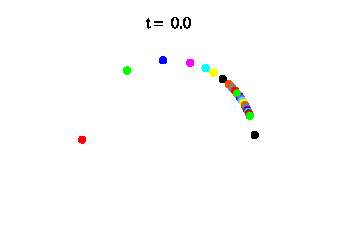
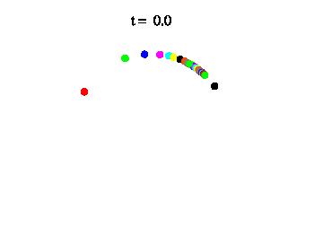

Phase Oscillators
We can observe many rhythmic systems in nature. Such systems are described by dynamical systems mathematically, although they often have many degrees of freedom. The phase reduction technique [1] reduces a limit-cycle system, even with external forces, to a phase oscillator system with only one phase variable, which helps our mathematical and numerical analysis.
A coupled limit-cycle system is reduced to a coupled phase-oscillator system by phase reduction. As a representative model, the Kuramoto model has been extensively studied.



In the Kuramoto model, the phase oscillators evolve according to the ordinary differential equations:
The oscillators have natural frequencies, which are in some cases assumed to follow the Lorentz distribution:
The above figures show that the system undergoes a synchronization transition when the coupling strength K is increased. With small K, the oscillators move incoherently; with strong coupling, they cooperate and tend to have similar phases.
Reference
[1] Yoshiki Kuramoto, Chemical Oscillations, Waves, and Turbulence (Dover, New York, 2003).
Last updated: November 2020.